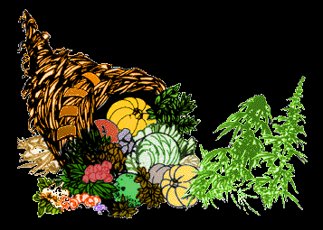

|  |
| |

 Of the 3 million plus edible plants that grow on earth, no other single plant source can compare with the nutritional value of hempseeds. Both the complete protein and the essential oil contained in hempseeds are in ideal ratios for human nutrition.
Of the 3 million plus edible plants that grow on earth, no other single plant source can compare with the nutritional value of hempseeds. Both the complete protein and the essential oil contained in hempseeds are in ideal ratios for human nutrition.
Only soybeans contain a higher percentage of protein. However, the composition of the protein in hempseed is unique in the vegetable kingdom. Sixty-five percent of the protein content in hempseed is in the form of globulin edestin.1 (The word edestin comes from the Greek “edestos,” meaning edible.)
1. Walker, David W., Ph.D., “Can Hemp Save Our Planet?”, citing St. Angelo, A.J., E.J. Conkerton, J.M. Dechary, and A.M. Altschul, 1966, Biochimica et Biophysica Acta, vol. 121, pp. 181; St. Angelo, A., L.y. Yatsu. and A.M. Altschul. 1968, Archives of Biochemistry and Biophysics, vol. 124, pp. 199-205; Stockwell, D.M., J.M. Dechary, and A.M. Altschul, 1964, Biochimica Biophysica Acta, vol. 82 pp. 221.
The exceptionally high edestin content of hempseed combined with albumin, another globular protein contained in all seeds, means the readily available protein in hempseed contains all the essential amino acids in ideal proportions to assure your body has the necessary building blocks to create proteins like disease fighting immunoglobulins—antibodies whose job is to ward off infections before the symptom of sickness set in.2
2. Morroson, R.T., Organic Chemistry, 1960; Kimber, Gray, Stackpole, Textbook of Anatomy and Physiology, 1943.
Cannabis seed protein even allows a body with nutrition-blocking tuberculosis, or almost any other nutrition-blocking ailment, to get maximum nourishment.*
*Cohen & Stillman, Therapeutic Potential of Marijuana, Plenum Press, NY, 1976; Czech. Tubercular Nutritional Study, 1955.
Even more important to building a strong immune system, hempseeds are the highest source in the plant kingdom of essential fatty acids. These essential oils, linoleic and linolenic acids, are responsible for the luster in your skin, hair, eyes, and even your thought processes. They lubricate (clear) the arteries and are vital to the immune system.
These essential fatty acids were used by Dr. Joanna Budwig (nominated for the Nobel Peace Prize every year since 1979) to successfully treat “terminal” cancer patients, as well as those suffering from cardiovascular disease, glandular atrophy, gall stones, kidney degeneration, acne, dry skin, menstrual problems, and immune deficiency.
This, as well as other research, prompted William Eidleman, M.D., UCLA, and R. Lee Hamilton, Ed.D., Ph.D., Medical Researcher-Biochemist UCLA Emeritus, to speak out on behalf of “the life-giving values” of cannabis hemp. They state:
“These essential oils support the immune system and guard against viral and other insults to the immune system. Studies are in progress using the essential oils to support the immune systems of people with the H.I.V. virus. So far they have been extremely promising.
“What is the richest source of these essential oils? Yes, you guessed it, the seeds of the cannabis hemp plant. … The insane prohibitions against the most valuable plant on Earth, cannabis hemp, must yield to public demand. … The promise of super health and the possibility of feeding the world is at our fingertips.” (December 29, 1991, and July 1997)
Hempseed extracts, like soybean, can be spiced to taste like chicken, steak, or pork and can be used to make tofu-type curd and margarine, at less cost than soybeans. Sprouting any seed improves its nutritional value and hemp can be sprouted and used like any other seed sprout for salads or cooking.
Sprouted hempseeds make milk, just as soybeans do. Alan “Birdseed” Brady of Santa Cruz, California, and Abba Das of Colorado use this milk to make a delicious and nutritious ice cream in many flavors that actually lowers cholesterol levels.
Hempseed is ground and used like flour, or cooked, then sweetened and combined with milk to produce a nutritional breakfast cereal—like oatmeal or cream of wheat. This type of porridge is known as a gruel. (Like the fiber, hempseeds will not get you high.)
“Hemp is a favorite [bird seed] because of its nourishing oily content.” (Margaret McKenny, Birds in the Garden, Reynal & Hitchcock, NY, 1939.) Incredibly, when cannabis hemp is grown for seed, half the weight of the mature, harvested female plant is seed!
English and European fishermen who cast in fresh-water lakes and rivers told me since 1995 that hempseed has always been the preferred bait in Europe for chumming—that is, casting the hempseeds on the water—causing the fish to scramble from all over to get the seeds, thereby getting caught. Not one of the European fishermen I talked to knew that hemp (hanf) seeds and marijuana were one in the same. So hempseed is the favorite of fish as well as most birds.
The byproduct of pressing hempseed for its nutritious vegetable oil is a high protein seed cake. Hempseed cake was one of the world’s principle animal feeds until this century.* Hempseed can supply a nearly complete diet for all domesticated animal (dogs, cats), many farm animals, and poultry, and allows animals maximum weight gain for less than current feed costs. And without any need for artificial growth steroids or other drugs currently poisoning the human race and food chain.
*U.S. Agricultural Index; Frazier, Jack, The Marijuana Farmers, Solar Age Press, New Orleans, LA, 1972; Fats That Heal, Fats That Kill, Udo, Erasmus, 1996.
Isn’t it strange—doesn’t it make you mad as hell—that the number-one food of all time for most birds, fish, horses, humans, and life in general, is illegal to have naturally and healthfully in the United States of America, as ordered by the Nazi/Gestapo-like Amerikan Drug Enforcement Administration and, through them, the USDA?
the authorized on-line version of Jack Herer’s “The Emperor Wears No Clothes”
| previous page | Chapter 8 | next page |
|
 |
 |
 |
 |